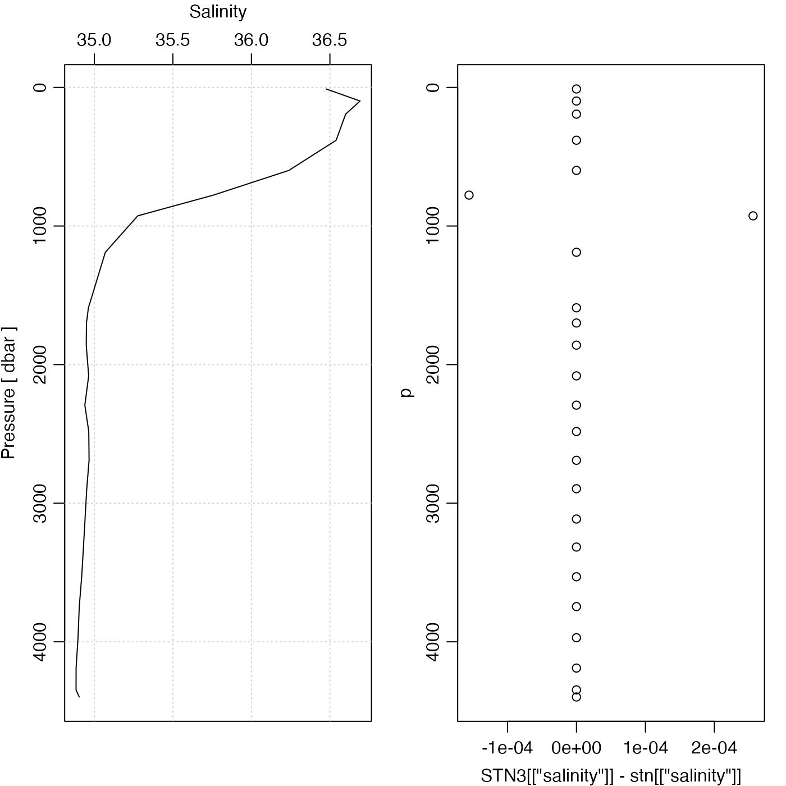

Data-quality flags are stored in the metadata
slot of oce objects in a
list named flags.
The present function (a generic that has specialized versions
for various data classes) provides a way to
manipulate the contents of the data slot, based on
such data-quality flags. For example, a common operation is to replace
erroneous data with NA.
If the flags within object's metadata slot is empty,
then object is returned, unaltered.
Otherwise, handleFlags examines object@metadata$flags
in the context of the flags argument, and then
carries out actions that are specified by the actions argument.
By default, this sets the returned data entries to NA,
wherever the corresponding metadata$flag values
signal unreliable data. To maintain a hint as to why
data were changed, metadata$flags in the
returned value is a direct copy of the corresponding
entry in object.
# S4 method for ctd
handleFlags(
object,
flags = NULL,
actions = NULL,
where = NULL,
debug = getOption("oceDebug")
)a ctd object.
A list specifying flag values upon which actions will be taken. This can take two forms.
In the first form, the
list has named elements each containing a vector of integers. For example,
salinities flagged with values of 1 or 3:9 would be specified
by flags=list(salinity=c(1,3:9)). Several data items can be specified,
e.g. flags=list(salinity=c(1,3:9), temperature=c(1,3:9)) indicates
that the actions are to take place for both salinity and temperature.
In the second form, flags is a list holding a single unnamed vector, and
this means to apply the actions to all the data entries. For example,
flags=list(c(1,3:9)) means to apply not just to salinity and temperature,
but to everything within the data slot.
If flags is not provided, then defaultFlags() is called, to try to
determine a reasonable default.
an optional list that contains items with
names that match those in the flags argument. If actions
is not supplied, the default will be to set all values identified by
flags to NA; this can also be specified by
specifying actions=list("NA"). It is also possible to specify
functions that calculate replacement values. These are provided
with object as the single argument, and must return a
replacement for the data item in question.
See “Details” for the default that is used if actions is not supplied.
an optional character value that permits the function to work with
objects that store flags in e.g. object@metadata$flags$where
instead of in object@metadata$flags, and data within
object@data$where instead of within object@data. The
default value of NULL means to look withing object@metadata
itself, and this is the default within oce. (The purpose of where
is to make oce extensible by other packages, which may choose to store
data two levels deep in the data slot.)
An optional integer specifying the degree of debugging, with
value 0 meaning to skip debugging and 1 or higher meaning to print some
information about the arguments and the data. It is usually a good idea to set
this to 1 for initial work with a dataset, to see which flags are being
handled for each data item. If not supplied, this defaults to the value of
getOption("oceDebug").
The following link used to work, but failed as of December 2020.
https://www.nodc.noaa.gov/woce/woce_v3/wocedata_1/whp/exchange/exchange_format_desc.htm
Other functions relating to data-quality flags:
defaultFlags(),
handleFlags,adp-method,
handleFlags,argo-method,
handleFlags,oce-method,
handleFlags,section-method,
handleFlags(),
initializeFlagScheme,ctd-method,
initializeFlagScheme,oce-method,
initializeFlagScheme,section-method,
initializeFlagSchemeInternal(),
initializeFlagScheme(),
initializeFlags,adp-method,
initializeFlags,oce-method,
initializeFlagsInternal(),
initializeFlags(),
setFlags,adp-method,
setFlags,ctd-method,
setFlags,oce-method,
setFlags()
Other things related to ctd data:
CTD_BCD2014666_008_1_DN.ODF.gz,
[[,ctd-method,
[[<-,ctd-method,
as.ctd(),
cnvName2oceName(),
ctd-class,
ctd.cnv,
ctdDecimate(),
ctdFindProfiles(),
ctdRaw,
ctdRepair(),
ctdTrim(),
ctd,
d200321-001.ctd,
d201211_0011.cnv,
initialize,ctd-method,
initializeFlagScheme,ctd-method,
oceNames2whpNames(),
oceUnits2whpUnits(),
plot,ctd-method,
plotProfile(),
plotScan(),
plotTS(),
read.ctd.itp(),
read.ctd.odf(),
read.ctd.odv(),
read.ctd.sbe(),
read.ctd.woce.other(),
read.ctd.woce(),
read.ctd(),
setFlags,ctd-method,
subset,ctd-method,
summary,ctd-method,
woceNames2oceNames(),
woceUnit2oceUnit(),
write.ctd()
library(oce)
data(section)
stn <- section[["station", 100]]
# 1. Default: anything not flagged as 2 is set to NA, to focus
# solely on 'good', in the World Hydrographic Program scheme.
STN1 <- handleFlags(stn, flags=list(c(1, 3:9)))
data.frame(old=stn[["salinity"]], new=STN1[["salinity"]], salinityFlag=stn[["salinityFlag"]])
#> old new salinityFlag
#> 1 36.4766 36.4766 2
#> 2 36.6921 36.6921 2
#> 3 36.6001 36.6001 2
#> 4 36.5399 36.5399 2
#> 5 36.2388 36.2388 2
#> 6 35.7580 NA 3
#> 7 35.2765 NA 3
#> 8 35.0700 35.0700 2
#> 9 34.9622 34.9622 2
#> 10 34.9497 34.9497 2
#> 11 34.9484 34.9484 2
#> 12 34.9639 34.9639 2
#> 13 34.9395 34.9395 2
#> 14 34.9645 34.9645 2
#> 15 34.9665 34.9665 2
#> 16 34.9516 34.9516 2
#> 17 34.9408 34.9408 2
#> 18 34.9307 34.9307 2
#> 19 34.9193 34.9193 2
#> 20 34.9040 34.9040 2
#> 21 34.8960 34.8960 2
#> 22 34.8838 34.8838 2
#> 23 34.8834 34.8834 2
#> 24 34.9039 34.9039 2
# 2. Use bottle salinity, if it is good and ctd is bad
replace <- 2 == stn[["salinityBottleFlag"]] & 2 != stn[["salinityFlag"]]
S <- ifelse(replace, stn[["salinityBottle"]], stn[["salinity"]])
STN2 <- oceSetData(stn, "salinity", S)
# 3. Use smoothed TS relationship to nudge questionable data.
f <- function(x) {
S <- x[["salinity"]]
T <- x[["temperature"]]
df <- 0.5 * length(S) # smooths a bit
sp <- smooth.spline(T, S, df=df)
0.5 * (S + predict(sp, T)$y)
}
par(mfrow=c(1,2))
STN3 <- handleFlags(stn, flags=list(salinity=c(1,3:9)), action=list(salinity=f))
plotProfile(stn, "salinity", mar=c(3, 3, 3, 1))
p <- stn[["pressure"]]
par(mar=c(3, 3, 3, 1))
plot(STN3[["salinity"]] - stn[["salinity"]], p, ylim=rev(range(p)))

# 4. Single-variable flags (vector specification)
data(section)
# Multiple-flag scheme: one per data item
A <- section[["station", 100]]
deep <- A[["pressure"]] > 1500
flag <- ifelse(deep, 7, 2)
for (flagName in names(A[["flags"]]))
A[[paste(flagName, "Flag", sep="")]] <- flag
Af <- handleFlags(A)
stopifnot(all.equal(is.na(Af[["salinity"]]), deep))
# 5. Single-variable flags (list specification)
B <- section[["station", 100]]
B[["flags"]] <- list(flag)
Bf <- handleFlags(B)
stopifnot(all.equal(is.na(Bf[["salinity"]]), deep))